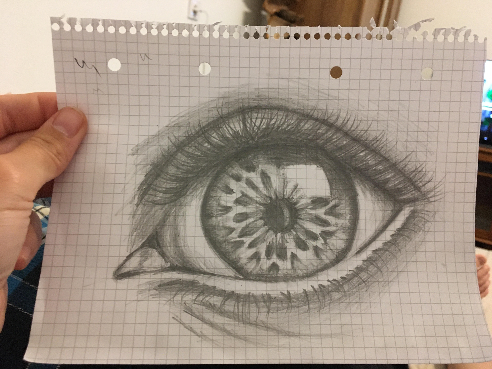

About me
Products
Contact
Kézzel rajzolt okosságok
Én és a kisöcsém
Szem száj orr
Cukimuki mókuskák
Nem annyira cukimuki mókuskák
A szövegkiemelős madár
A csibének látszó szem

Fejek hangulatban
Fejek hangulat nélkül
Rajzfilmfigurák, amik közül csak a kövér fickó tetszik